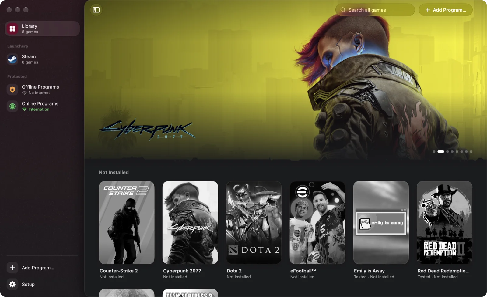

Windows games on your Mac.
Play your games through Steam, right inside Corkscrew. Or install programs straight from a .zip, .rar, .7z or .iso.
$ curl -fsSL https://prateek-srivastav.github.io/corkscrew/install.sh | bash
Install in one line.
-
Paste this into Terminal.
$ curl -fsSL https://prateek-srivastav.github.io/ corkscrew/install.sh | bash -
Click Set Up Corkscrew.It sets up Steam and everything else it needs.
-
Open Steam, or drop in a download.
Free and open source. Apple Silicon Mac with macOS 26 or 27. About 330 MB. Run the command again to update. Read the script

Steam games and everything you install, in one Library.
Install straight from the download.
No unpacking app, no Terminal. Corkscrew unpacks the file, puts a disc image in the drive and runs the setup for you.
- .zip
- .rar
- .7z
- .iso
Split downloads too: .part1.rar, .r00, .7z.001.
- 01
Drop the file
On Corkscrew’s window, or open it with Corkscrew from Finder.
- 02
Click Install
Choose where it goes, with or without internet. Keep the file, or let Corkscrew delete it to save space.
- 03
Run the setup
Corkscrew adds the program to your Library and cleans up.